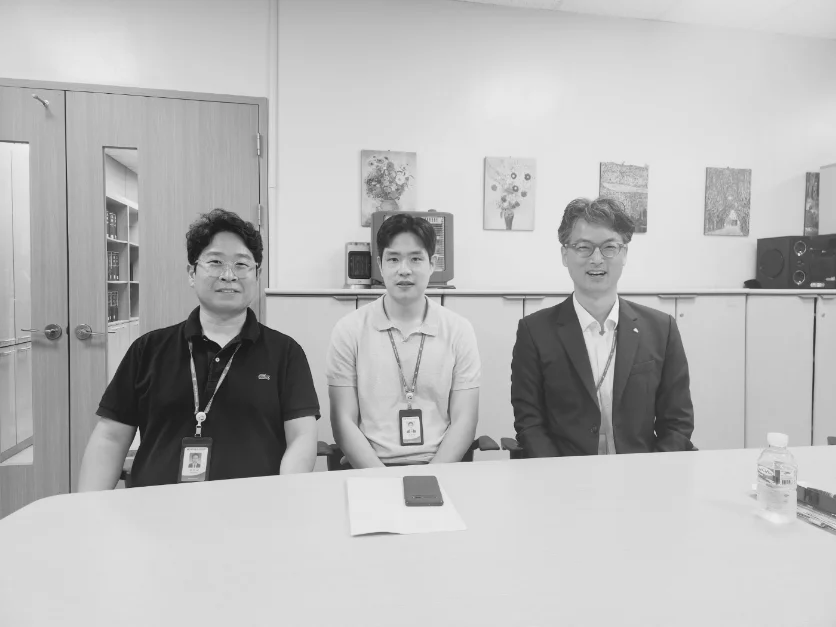
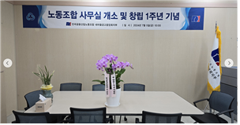
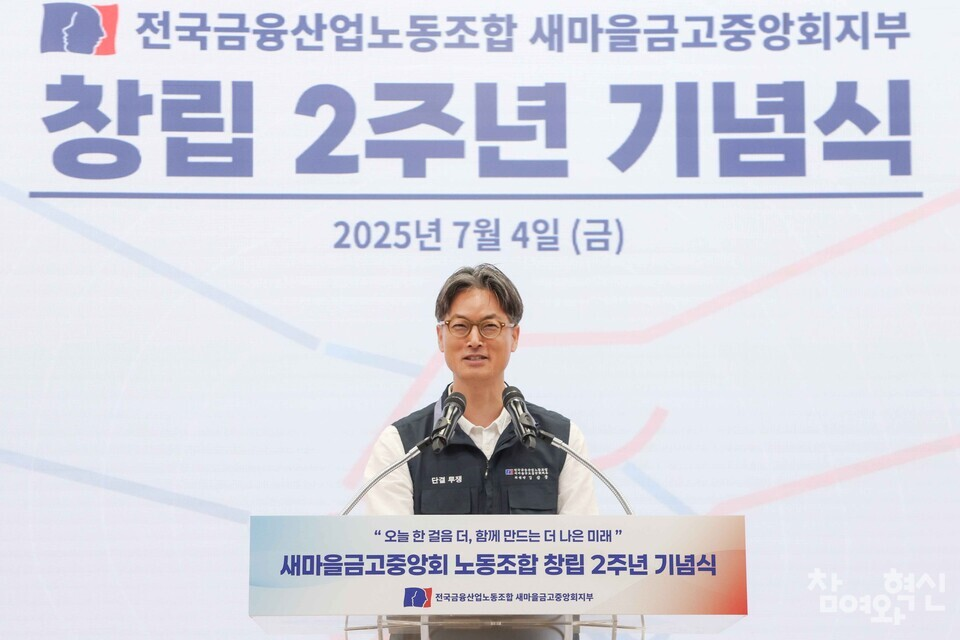

시작 · 다시 세운 노동조합
2023년,
2023년,
다시 시작했습니다
조합원들의 열망으로, 멈춰 있던 노동조합이 다시 출범했습니다.

지하 1층 옛 직원협의회 사무실에서 노동조합 재건의 시작을 기록한
초대 집행부의 첫 흑백 사진
(강민규 수석부위원장, 고강일 사무국장, 김삼중 위원장)


35년
동안 없었던 노동조합,
조합원의 손으로 다시 세웠습니다
조합원의 손으로 다시 세웠습니다
35년 동안 없었던 노동조합. 조합원들의 열망으로 노동조합이 다시 출범했습니다.
김삼중 위원장,
강민규 수석부위원장,
고강일 사무국장은
초대 집행부를 구성하여 노동조합 재건의 길을 함께 걸었습니다.